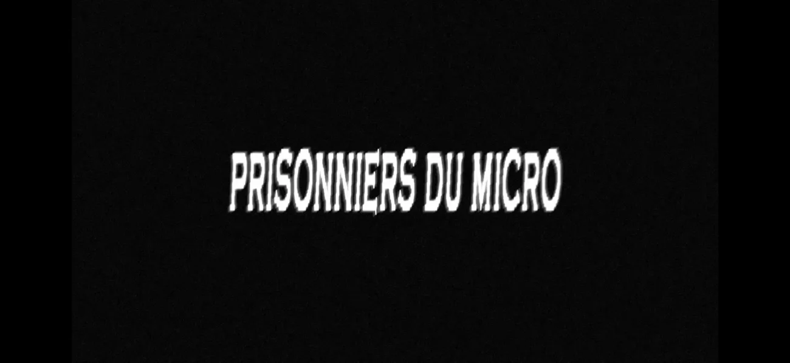

💾 JEAN MARTIN OSSEUX
LABO
PROJETS
ARCHIVE
FR
EN
RU
← RETOUR AU LABO
[ DOSSIER / PRISONNIERS-DU-MICRO ] — ACCÈS AUTORISÉ
Prisonniers du Micro
Hip-hop, collaboration.
Un laboratoire artistique indépendant entre réel et fiction. Bienvenue dans le désordre.
VISITER LE PROJET ↗

← QUITTER LE DOSSIER
FERMER ×